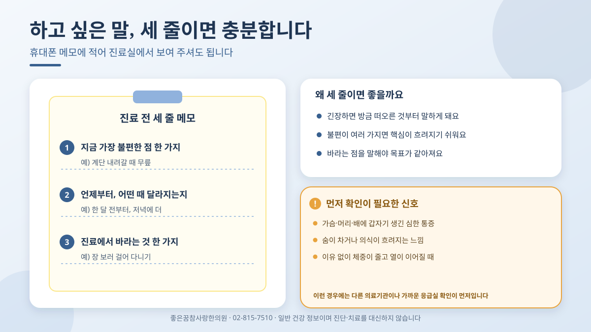

이종호 한의사 감수좋은꿈참사랑한의원 대표원장 (한의사 면허번호 19769)발행 2026-11-23 · 수정 2026-11-25
이 글의 차례
막상 진료실에 앉으면 할 말이 잘 떠오르지 않는 일이 흔합니다. 미리 세 줄만 정리해 두면 이야기가 또렷해지고, 짧은 시간 안에도 꼭 필요한 내용이 빠지지 않습니다. 첫째 줄은 지금 가장 불편한 점, 둘째 줄은 언제부터 어떤 때에 달라지는지, 셋째 줄은 이번 진료에서 바라는 점입니다.
왜 세 줄로 정리하면 좋을까요
- 긴장하면 가장 불편한 것보다 방금 떠오른 것부터 말하게 되는 경우가 많습니다.
- 불편이 여러 가지면 순서 없이 이어져 핵심이 흐려지기 쉽습니다.
- 바라는 점을 말하지 않으면 서로 다른 목표를 생각한 채 상담이 끝나기도 합니다.
- 짧게 적어 두면 오히려 진료실에서 대화를 넓혀 가기 쉽습니다.
자주 하는 오해
- 증상을 빠짐없이 길게 적어 가야 제대로 진료받는다고 여기기 쉽지만, 핵심 한두 줄이 있으면 나머지는 진료실에서 질문으로 이어 갈 수 있습니다.
- 잠이나 소화 이야기는 아픈 곳과 상관없다고 빼기 쉽지만, 한의원에서는 몸 전체 리듬을 함께 보기 때문에 한 단어라도 적어 두시면 도움이 됩니다.
- 바라는 점을 말하면 무리한 요구처럼 들릴까 걱정하는 분이 많지만, "잠이라도 좀 이어서 자고 싶다"처럼 바라는 점이 분명해야 진료 방향을 맞추기 쉽습니다.
- 메모를 보며 말하면 실례라고 여기기 쉽지만, 휴대폰 화면이나 종이를 그대로 보여 주셔도 됩니다.
예를 들면 이런 경우입니다
- 예를 들어 허리 통증과 두통, 잠 설침이 함께 있는 직장인이라면 "아침에 허리가 굳어 세수하기 힘들다 / 한 달 전 야근이 늘면서부터, 오후에는 두통도 있다 / 출근 준비가 조금 수월했으면" 처럼 적을 수 있습니다.
- 예를 들어 시험이 다가오면 배가 아픈 수험생이라면 "시험 전날 배가 아프고 화장실을 자주 간다 / 고3이 되면서부터, 아침을 거르면 더하다 / 시험 날 속이 편했으면"처럼 정리할 수 있습니다.
- 예를 들어 글씨를 길게 쓰기 어려운 어르신이라면 "계단 내려갈 때 오른쪽 무릎 / 가을부터 / 시장까지 걸어가고 싶다" 정도로 짧게 적거나, 가족이 대신 적어 드려도 충분합니다.
먼저 이렇게 여쭙니다
- 지금 가장 불편한 점 한 가지는 무엇인가요?
- 언제부터, 어떤 때에 달라지나요?
- 일상에서 가장 불편한 순간은 언제인가요?
- 잠, 소화, 대소변, 손발의 온기는 요즘 어떤가요?
- 이번 진료에서 바라는 점은 무엇인가요?
방문 전에 먼저 해 볼 수 있는 것
- 첫째 줄: 지금 가장 불편한 점 한 가지
- 둘째 줄: 언제부터, 어떤 때에 달라지는지
- 셋째 줄: 진료에서 바라는 것 한 가지
- 세 줄 아래에 잠·소화·배변 가운데 달라진 것이 있으면 한 단어씩 덧붙이기
- 종이 대신 휴대폰 메모에 적어 진료실에서 보여 주기
스스로 점검해 보세요
방문 전에 아래 항목을 한 번 확인해 보세요.
- 가장 불편한 점 한 가지를 한 문장으로 말할 수 있다
- 언제부터 시작됐는지 대략의 시기(며칠 전, 몇 주 전, 몇 달 전)를 알고 있다
- 증상이 심해지거나 덜해지는 때(시간대, 동작, 음식)를 하나쯤 떠올릴 수 있다
- 최근 잠, 소화, 대소변에 달라진 점이 있는지 생각해 봤다
- 이번 진료에서 바라는 점이 한 가지 있다
- 복용 중인 약과 영양제 이름을 적어 두었거나 사진을 찍어 두었다
모두 채우지 못해도 괜찮습니다. 비어 있는 칸은 진료실에서 함께 채워 갑니다. 두 번째 방문부터는 지난번 세 줄을 다시 꺼내 "첫째 줄이 이만큼 달라졌다"고 한 줄만 덧붙여 오셔도 이어서 상담하기 쉽습니다.
한의원에서 함께 살필 수 있는 경우
- 불편한 곳이 여러 군데라 어디서부터 말할지 모를 때 우선순위를 함께 정합니다.
- 증상이 오래되어 시작 시점이 흐릿할 때 생활 변화와 함께 짚어 봅니다.
- 하고 싶은 말이 많아 길어질 때 핵심을 나눠 가며 묻습니다.
좋은꿈참사랑한의원의 첫 방문은 접수 뒤 문진, 진맥, 필요하면 장비 확인, 생활 기록 함께 보기, 치료 방향 설명 순서로 진행됩니다. 문진에서는 세 줄 메모를 함께 보며 우선순위를 정하고, 진맥은 모든 분께 짚어 말로 다 전하지 못한 몸 상태를 살핍니다.
필요하다고 판단되면 초음파나 인바디 770 같은 장비로 확인하고, 잠·소화·배변 기록을 가져오셨다면 함께 봅니다. 마지막으로 오늘 할 치료와 그 이유, 집에서 지킬 일, 다음에 확인할 일을 짧게 정리해 드립니다. 치료 중 온도나 자세가 불편하면 언제든 말씀해 주세요. 머무시는 동안만큼은 편하게 쉬다 가실 수 있도록 맞춰 드립니다.
언제 준비하고, 언제는 바로 병원으로 가야 하나요
- 세 줄 메모는 방문 하루 이틀 전에 적고, 진료 당일 아침에 한 번 다시 읽어 보세요.
- 증상이 날마다 들쭉날쭉하다면 방문 전 3~7일 동안 하루 한 줄씩 적어 오시면 흐름을 보기 쉽습니다.
- 아래 '먼저 확인이 필요한 증상'이 있다면 메모를 준비하느라 기다리지 말고 바로 병원이나 응급실로 가세요.
이렇게 기록해 오시면 상담이 쉬워집니다
- 세 줄 메모(가장 불편한 점, 시작과 변화, 바라는 점)
- 잠·소화·배변에서 달라진 점 한 줄
- 복용 중인 약과 영양제
- 다른 의료기관 검사 결과지가 있다면 함께
이런 증상은 먼저 확인이 필요합니다
- 가슴, 머리, 배에 갑자기 생긴 심한 통증
- 숨이 차거나 의식이 흐려지는 느낌
- 이유 없이 체중이 줄고 열이 이어지는 경우
이런 경우에는 한의원보다 다른 의료기관이나 응급실 확인이 먼저입니다. 복용 중인 약은 처방한 의사와 상의 없이 줄이거나 끊지 않습니다.
함께 읽으면 좋은 글
- 한의원에 처음 가면 어떤 순서로 진료하고 무엇을 준비하나요?
- 다시 방문했을 때 어떤 말로 시작하면 진료가 이어지나요?
- 맥진은 어떻게 하고 손목에서 무엇을 살피나요?

여쭙는 것
- 지금 가장 불편한 점 한 가지는 무엇인가요?
- 언제부터, 어떤 때에 달라지나요?
- 일상에서 가장 불편한 순간은 언제인가요?
한의원에서 함께 살필 것
- 불편한 곳이 여러 군데라 어디서부터 말할지 모를 때 우선순위를 함께 정합니다.
- 증상이 오래되어 시작 시점이 흐릿할 때 생활 변화와 함께 짚어 봅니다.
- 하고 싶은 말이 많아 길어질 때 핵심을 나눠 가며 묻습니다.
먼저 확인이 필요한 신호
- 가슴, 머리, 배에 갑자기 생긴 심한 통증
- 숨이 차거나 의식이 흐려지는 느낌
- 이유 없이 체중이 줄고 열이 이어지는 경우
한눈에 보는 표
| 구분 | 핵심 |
|---|---|
| 여쭙는 것 | 지금 가장 불편한 점 한 가지는 무엇인가요? 언제부터, 어떤 때에 달라지나요? |
| 한의원에서 함께 살필 것 | 불편한 곳이 여러 군데라 어디서부터 말할지 모를 때 우선순위를 함께 정합니다. 증상이 오래되어 시작 시점이 흐릿할 때 생활 변화와 함께 짚어 봅니다. |
| 먼저 확인이 필요한 신호 | 가슴, 머리, 배에 갑자기 생긴 심한 통증 숨이 차거나 의식이 흐려지는 느낌 |
자주 묻는 질문
세 줄을 꼭 채워야 하나요?
아닙니다. 한 줄만 적어도 충분하고, 나머지는 진료실에서 함께 채웁니다.
불편한 곳이 많으면 어떻게 정리하나요?
가장 불편한 것부터 번호를 매겨 두면 순서를 정하기 쉽습니다.
메모를 보여 줘도 되나요?
네, 휴대폰 화면이나 종이를 보여 주셔도 됩니다.
아픈 곳만 적었는데 잠이나 소화도 물어보나요?
네. 몸 전체 리듬을 함께 살피기 때문에 진료실에서 이어서 여쭙습니다. 진맥도 모든 분께 짚습니다.
좋은꿈참사랑한의원은 재진 때 지난번 이야기부터 이어서 여쭙니다. 진료시간과 예약은 오시는 길에서 확인하세요.
어디서 상담받을 수 있나요?
좋은꿈참사랑한의원은 서울 동작구 만양로2길 2 신성빌딩 3층·5층(서울 동작구 상도동, 7호선 상도역 3번 출구 근처)에 있습니다. 한의사 3명(이종호 대표원장, 조영기 수석진료원장, 정원영 진료원장)이 진료합니다. 진료시간은 평일 09:30~20:00(점심 13:00~14:00), 토·일·공휴일 09:30~15:00이며, 방문 전 전화로 확인을 권합니다. 예약은 네이버 예약, 카카오톡 상담, 전화 02-815-7510로 받습니다.
이 글은 일반적인 건강 정보이며 개인의 진단이나 치료를 대신하지 않습니다. 증상이 있거나 복용 중인 약이 있다면 진료를 통해 확인하세요. 치료 효과는 개인마다 다를 수 있습니다.
작성 기준: 일반적으로 알려져 있는 건강 정보를 참고해 정리했습니다(대표원장 감수). 증상 기록은 1~2주 동안 하루 1회, 비슷한 시간에 적어 오시면 지난 상태와 비교하기 쉽습니다.